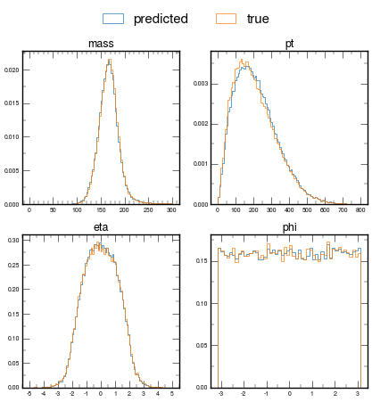

Initial plots for ttH#
In this NB you’ll find some initial plots that I made:
Sanity checks of the datafile
Plots of m, pt, eta, phi (predicted vs true)
btag score plots (predicted vs true)
Checks for correlations between predicted pt’s of hadronic top and Higgs
Initialise#
Show code cell source
import h5py
import awkward as ak
import vector
import numpy as np
import matplotlib.pyplot as plt
import matplotlib as mpl
import mplhep as hep
from matplotlib.colors import LogNorm
hep.style.use(hep.style.ROOT)
mpl.rcParams['figure.dpi'] = 50
vector.register_awkward()
df = h5py.File('./SPANet/predictions/0405_output_v49_matched.h5','r')
df_input = h5py.File('./SPANet/data/tth_matched_3.h5','r')
Show code cell source
fields = ['pt','eta','phi','btag']
jets = ak.zip({
f: df["INPUTS"]["Source"][f][()] for f in fields
}, with_name="Momentum4D")
jets["m"] = np.zeros_like(jets.pt)
Show code cell source
jets[0].tolist()
Show code cell output
[{'pt': 141.5,
'eta': 1.500244140625,
'phi': 1.181396484375,
'btag': 0.006282806396484375,
'm': 0.0},
{'pt': 126.0,
'eta': 2.365234375,
'phi': -2.8564453125,
'btag': 0.99609375,
'm': 0.0},
{'pt': 123.8125,
'eta': 1.673828125,
'phi': 0.4423828125,
'btag': 0.006175994873046875,
'm': 0.0},
{'pt': 102.4375,
'eta': 1.1171875,
'phi': -0.8157958984375,
'btag': 0.99951171875,
'm': 0.0},
{'pt': 84.375,
'eta': 2.15576171875,
'phi': 1.50146484375,
'btag': 0.19140625,
'm': 0.0},
{'pt': 42.5625,
'eta': 0.723876953125,
'phi': 3.0244140625,
'btag': 0.998046875,
'm': 0.0},
{'pt': 0.0, 'eta': 0.0, 'phi': 0.0, 'btag': 0.0, 'm': 0.0},
{'pt': 0.0, 'eta': 0.0, 'phi': 0.0, 'btag': 0.0, 'm': 0.0},
{'pt': 0.0, 'eta': 0.0, 'phi': 0.0, 'btag': 0.0, 'm': 0.0},
{'pt': 0.0, 'eta': 0.0, 'phi': 0.0, 'btag': 0.0, 'm': 0.0},
{'pt': 0.0, 'eta': 0.0, 'phi': 0.0, 'btag': 0.0, 'm': 0.0},
{'pt': 0.0, 'eta': 0.0, 'phi': 0.0, 'btag': 0.0, 'm': 0.0},
{'pt': 0.0, 'eta': 0.0, 'phi': 0.0, 'btag': 0.0, 'm': 0.0},
{'pt': 0.0, 'eta': 0.0, 'phi': 0.0, 'btag': 0.0, 'm': 0.0}]
Sanity checks#
Higgs invariant mass#
H_b1_true = ak.Array(df_input["TARGETS"]["h"]["b1"][()])
H_b2_true = ak.Array(df_input["TARGETS"]["h"]["b2"][()])
# Trick to make it a var-formatted array with 1 element per row
H_b1_true = ak.unflatten(H_b1_true, ak.ones_like(H_b1_true))
H_b2_true = ak.unflatten(H_b2_true, ak.ones_like(H_b2_true))
higgs_index_true = ak.concatenate((H_b1_true, H_b2_true), axis=1)
higgs_jet_true = jets[higgs_index_true]
plt.hist((higgs_jet_true[:,0] + higgs_jet_true[:,1]).m, bins=100); # H inv mass hist
Show code cell source
higgs_jet_true[1].tolist() # always two jets b1 and b2
Show code cell output
[{'pt': 111.125,
'eta': -0.703125,
'phi': 0.4298095703125,
'btag': 0.71044921875,
'm': 0.0},
{'pt': 60.4375,
'eta': 0.29644775390625,
'phi': 1.163818359375,
'btag': 0.9775390625,
'm': 0.0}]
plt.hist(ak.num(higgs_jet_true));
H_b1_pred = ak.Array(df["TARGETS"]["h"]["b1"][()])
H_b2_pred = ak.Array(df["TARGETS"]["h"]["b2"][()])
# Trick to make it a var-formatted array with 1 element per row
H_b1_pred = ak.unflatten(H_b1_pred, ak.ones_like(H_b1_pred))
H_b2_pred = ak.unflatten(H_b2_pred, ak.ones_like(H_b2_pred))
higgs_index_pred = ak.concatenate((H_b1_pred, H_b2_pred), axis=1)
higgs_jet_pred = jets[higgs_index_pred]
Show code cell source
print(f"Length of higgs_jet_pred: {len(higgs_jet_pred)}")
print(f"Length of higgs_jet_true: {len(higgs_jet_true)}") # same for fully matched
Length of higgs_jet_pred: 67876
Length of higgs_jet_true: 67876
Show code cell source
plt.hist((higgs_jet_true[:,0] + higgs_jet_true[:,1]).m, bins=100,
density=True, histtype='step', label="true", range=(0,300))
plt.hist((higgs_jet_pred[:,0] + higgs_jet_pred[:,1]).m, bins=100,
density=True, histtype='step', label="predicted", range=(0,300))
plt.xlim(0,300)
plt.xlabel(r"$m_{bb}$")
plt.legend()
plt.rcParams['figure.facecolor'] = 'white'
plt.savefig("higgs_mass.png", dpi=200)
plt.show()
Hadronic top invariant mass#
# Initialise
Show code cell source
t1_q1_pred = ak.Array(df["TARGETS"]["t1"]["q1"][()])
t1_q2_pred = ak.Array(df["TARGETS"]["t1"]["q2"][()])
t1_b_pred = ak.Array(df["TARGETS"]["t1"]["b"][()])
t1_q1_pred = ak.unflatten(t1_q1_pred, ak.ones_like(t1_q1_pred))
t1_q2_pred = ak.unflatten(t1_q2_pred, ak.ones_like(t1_q2_pred))
t1_b_pred = ak.unflatten(t1_b_pred, ak.ones_like(t1_b_pred))
hadtop_index_pred = ak.concatenate((t1_q1_pred, t1_q2_pred, t1_b_pred), axis=1)
hadtop_jet_pred = jets[hadtop_index_pred]
t1_q1_true = ak.Array(df_input["TARGETS"]["t1"]["q1"][()])
t1_q2_true = ak.Array(df_input["TARGETS"]["t1"]["q2"][()])
t1_b_true = ak.Array(df_input["TARGETS"]["t1"]["b"][()])
t1_q1_true = ak.unflatten(t1_q1_true, ak.ones_like(t1_q1_true))
t1_q2_true = ak.unflatten(t1_q2_true, ak.ones_like(t1_q2_true))
t1_b_true = ak.unflatten(t1_b_true, ak.ones_like(t1_b_true))
hadtop_index_true = ak.concatenate((t1_q1_true, t1_q2_true, t1_b_true), axis=1)
hadtop_jet_true = jets[hadtop_index_true]
plt.hist(ak.num(hadtop_jet_pred));

Show code cell source
plt.hist((hadtop_jet_true[:,0] + hadtop_jet_true[:,1] + hadtop_jet_true[:,2]).m,
bins=100, density=True, alpha=0.3, label="true")
plt.hist((hadtop_jet_pred[:,0] + hadtop_jet_pred[:,1] + + hadtop_jet_pred[:,2]).m,
bins=100, density=True, alpha=0.3, label="predicted")
plt.xlim(50,350)
plt.xlabel(r"$m_{qqb}$")
plt.legend()
plt.show()
Leptonic top invariant mass#
# Initialise
Show code cell source
t2_b_pred = ak.Array(df["TARGETS"]["t2"]["b"][()])
t2_b_pred = ak.unflatten(t2_b_pred, ak.ones_like(t2_b_pred))
leptop_index_pred = t2_b_pred
leptop_jet_pred = jets[leptop_index_pred]
t2_b_true = ak.Array(df_input["TARGETS"]["t2"]["b"][()])
t2_b_true = ak.unflatten(t2_b_true, ak.ones_like(t2_b_true))
leptop_index_true = t2_b_true
leptop_jet_true = jets[leptop_index_true]
# can't reconstruct an invariant mass for now (no leptonic info in this file)
Show code cell source
plt.hist(leptop_jet_true[:,0].pt, bins=100, alpha=0.3,
range=(0,8label="true")
plt.hist(leptop_jet_pred[:,0].pt, bins=100, alpha=0.3, label="predicted")
plt.xlabel(r"$b$ $pt$")
plt.legend()
plt.show()
Plots of m, pt, eta, phi#
# Define plotting functions
Show code cell source
def plot_m_pt_eta_phi(data, title=None):
fig, axs = plt.subplots(2, 2)
if len(data[0]) == 3: # hadronic top
axs[0,0].hist((data[:,0] + data[:,1] + data[:,2]).m, bins=100, range=(0,300))
axs[0,1].hist((data[:,0] + data[:,1] + data[:,2]).pt, bins=100, range=(0,800))
axs[1,0].hist((data[:,0] + data[:,1] + data[:,2]).eta, bins=100, range=(-5,5))
axs[1,1].hist((data[:,0] + data[:,1] + data[:,2]).phi, bins=50,
range=(-np.pi,np.pi))
if len(data[0]) == 2: # Higgs
axs[0,0].hist((data[:,0] + data[:,1]).m, bins=100, range=(0,200))
axs[0,1].hist((data[:,0] + data[:,1]).pt, bins=100, range=(0,800))
axs[1,0].hist((data[:,0] + data[:,1]).eta, bins=100, range=(-5,5))
axs[1,1].hist((data[:,0] + data[:,1]).phi, bins=50, range=(-np.pi,np.pi))
if len(data[0]) == 1: # leptonic top
axs[0,1].hist((data[:,0]).pt, bins=100, range=(0,800))
axs[1,0].hist((data[:,0]).eta, bins=100, range=(-5,5))
axs[1,1].hist((data[:,0]).phi, bins=50, range=(-np.pi,np.pi))
axs[0,0].set_title('mass')
axs[0,1].set_title('pt')
axs[1,0].set_title('eta')
axs[1,1].set_title('phi')
axs[0,0].tick_params(labelsize=10)
axs[0,1].tick_params(labelsize=10)
axs[1,0].tick_params(labelsize=10)
axs[1,1].tick_params(labelsize=10)
if title != None:
fig.suptitle(title)
plt.show()
Show code cell source
def compare_m_pt_eta_phi(data, fig=None, axs=None, title=None):
if fig == None and axs == None:
fig, axs = plt.subplots(2, 2)
if len(data[0]) == 3: # hadronic top
axs[0,0].hist((data[:,0] + data[:,1] + data[:,2]).m, bins=100, range=(0,300),
histtype="step", density=True)
axs[0,1].hist((data[:,0] + data[:,1] + data[:,2]).pt, bins=100, range=(0,800),
histtype="step", density=True)
axs[1,0].hist((data[:,0] + data[:,1] + data[:,2]).eta, bins=100, range=(-5,5),
histtype="step", density=True)
axs[1,1].hist((data[:,0] + data[:,1] + data[:,2]).phi, bins=50,
range=(-np.pi,np.pi), histtype="step", density=True)
if len(data[0]) == 2: # Higgs
axs[0,0].hist((data[:,0] + data[:,1]).m, bins=100, range=(0,200),
histtype="step", density=True)
axs[0,1].hist((data[:,0] + data[:,1]).pt, bins=100, range=(0,800),
histtype="step", density=True)
axs[1,0].hist((data[:,0] + data[:,1]).eta, bins=100, range=(-5,5),
histtype="step", density=True)
axs[1,1].hist((data[:,0] + data[:,1]).phi, bins=50, range=(-np.pi,np.pi),
histtype="step", density=True)
if len(data[0]) == 1: # leptonic top
axs[0,1].hist((data[:,0]).pt, bins=100, range=(0,800),
histtype="step", density=True)
axs[1,0].hist((data[:,0]).eta, bins=100, range=(-5,5),
histtype="step", density=True)
axs[1,1].hist((data[:,0]).phi, bins=50, range=(-np.pi,np.pi),
histtype="step", density=True)
axs[0,0].set_title('mass', fontsize=18)
axs[0,1].set_title('pt', fontsize=18)
axs[1,0].set_title('eta', fontsize=18)
axs[1,1].set_title('phi', fontsize=18)
axs[0,0].tick_params(labelsize=10)
axs[0,1].tick_params(labelsize=10)
axs[1,0].tick_params(labelsize=10)
axs[1,1].tick_params(labelsize=10)
#axs[0,0].xaxis.set_major_locator(mpl.ticker.MultipleLocator(50))
#axs[0,0].xaxis.set_minor_locator(mpl.ticker.MultipleLocator(10))
#axs[0,0].yaxis.set_major_locator(mpl.ticker.MultipleLocator(0.005))
#axs[0,0].yaxis.set_minor_locator(mpl.ticker.MultipleLocator(0.0025))
axs[0,1].xaxis.set_major_locator(mpl.ticker.MultipleLocator(100))
axs[0,1].xaxis.set_minor_locator(mpl.ticker.MultipleLocator(50))
axs[0,1].yaxis.set_major_locator(mpl.ticker.MultipleLocator(0.002))
axs[0,1].yaxis.set_minor_locator(mpl.ticker.MultipleLocator(0.001))
axs[1,0].xaxis.set_major_locator(mpl.ticker.MultipleLocator(1))
axs[1,0].xaxis.set_minor_locator(mpl.ticker.MultipleLocator(0.5))
axs[1,0].yaxis.set_major_locator(mpl.ticker.MultipleLocator(0.05))
axs[1,0].yaxis.set_minor_locator(mpl.ticker.MultipleLocator(0.025))
axs[1,1].xaxis.set_major_locator(mpl.ticker.MultipleLocator(1))
axs[1,1].xaxis.set_minor_locator(mpl.ticker.MultipleLocator(0.5))
axs[1,1].yaxis.set_major_locator(mpl.ticker.MultipleLocator(0.05))
axs[1,1].yaxis.set_minor_locator(mpl.ticker.MultipleLocator(0.025))
if title != None:
fig.suptitle(title)
return fig,axs
Higgs#
Show code cell source
plot_m_pt_eta_phi(higgs_jet_true, "Higgs true")
Show code cell source
fig,axs = compare_m_pt_eta_phi(higgs_jet_pred)
compare_m_pt_eta_phi(higgs_jet_true, fig, axs)
labels = ["predicted", "true"]
fig.legend(labels, loc="upper center", ncol=2)
#plt.show()
plt.rcParams['figure.facecolor'] = 'white'
plt.savefig("./efficiency_plots/h_m_pt_eta_phi.png", transparent=False, dpi=300,
bbox_inches='tight')
Hadronic top#
Show code cell source
fig,axs = compare_m_pt_eta_phi(hadtop_jet_pred)
compare_m_pt_eta_phi(hadtop_jet_true, fig, axs)
labels = ["predicted", "true"]
fig.legend(labels, loc="upper center", ncol=2)
#plt.show()
plt.rcParams['figure.facecolor'] = 'white'
plt.savefig("./efficiency_plots/t1_m_pt_eta_phi.png", transparent=False, dpi=300,
bbox_inches='tight')

Leptonic top#
Show code cell source
fig,axs = compare_m_pt_eta_phi(leptop_jet_pred)
compare_m_pt_eta_phi(leptop_jet_true, fig, axs)
labels = ["predicted", "true"]
fig.legend(labels, loc="upper center", ncol=2)
#plt.show()
plt.rcParams['figure.facecolor'] = 'white'
plt.savefig("./efficiency_plots/t2_m_pt_eta_phi.png", transparent=False, dpi=300,
bbox_inches='tight')
btag plots#
Show code cell source
plt.hist(leptop_jet_true[:,0].btag, bins=100, histtype="step", label="true")
plt.hist(leptop_jet_pred[:,0].btag, bins=100, histtype="step", label="predicted")
plt.xlabel("btag score")
plt.legend(loc="upper center")
plt.title("Leptonic top")
plt.show()
Show code cell source
plt.hist(hadtop_jet_true[:,0].btag, bins=100, histtype="step", label="true")
plt.hist(hadtop_jet_pred[:,0].btag, bins=100, histtype="step", label="predicted")
plt.xlabel("btag score")
plt.legend(loc="upper center")
plt.title("Hadronic top q1")
plt.show()
plt.hist(hadtop_jet_true[:,1].btag, bins=100, histtype="step", label="true")
plt.hist(hadtop_jet_pred[:,1].btag, bins=100, histtype="step", label="predicted")
plt.xlabel("btag score")
plt.legend(loc="upper center")
plt.title("Hadronic top q2")
plt.show()
plt.hist(hadtop_jet_true[:,2].btag, bins=100, histtype="step", label="true")
plt.hist(hadtop_jet_pred[:,2].btag, bins=100, histtype="step", label="predicted")
plt.xlabel("btag score")
plt.legend(loc="upper center")
plt.title("Hadronic top b")
plt.show()
Show code cell source
plt.hist(higgs_jet_true[:,0].btag, bins=100, histtype="step", label="true")
plt.hist(higgs_jet_pred[:,0].btag, bins=100, histtype="step", label="predicted")
plt.xlabel("btag score")
plt.legend(loc="upper center")
plt.title("Higgs b1")
plt.show()
plt.hist(higgs_jet_true[:,1].btag, bins=100, histtype="step", label="true")
plt.hist(higgs_jet_pred[:,1].btag, bins=100, histtype="step", label="predicted")
plt.xlabel("btag score")
plt.legend(loc="upper center")
plt.title("Higgs b2")
plt.show()
Correlations of parton pt’s#
# Higgs 2D histograms
Show code cell source
first_pt = higgs_jet_true[0:,0].pt
second_pt = higgs_jet_true[0:,1].pt
plt.hist2d(first_pt, second_pt, bins=100, range=([[0, 600], [0, 600]]),
norm=LogNorm())
plt.xlabel("b1 true jet pt")
plt.ylabel("b2 true jet pt")
plt.colorbar()
hep.cms.label()
plt.show()
first_pt = higgs_jet_pred[0:,0].pt
second_pt = higgs_jet_pred[0:,1].pt
plt.hist2d(first_pt, second_pt, bins=100, range=([[0, 600], [0, 600]]),
norm=LogNorm())
plt.xlabel("b1 predicted jet pt")
plt.ylabel("b2 predicted jet pt")
plt.colorbar()
hep.cms.label()
plt.show()

# Hadronic top 2D histograms
Show code cell source
first_pt = hadtop_jet_true[:,0].pt
second_pt = hadtop_jet_true[:,1].pt
plt.hist2d(first_pt, second_pt, bins=100, range=([[0, 600], [0, 600]]),
norm=LogNorm())
plt.xlabel("q1 true jet pt")
plt.ylabel("q2 true jet pt")
plt.colorbar()
hep.cms.label()
plt.show()
first_pt = hadtop_jet_pred[:,0].pt
second_pt = hadtop_jet_pred[:,1].pt
plt.hist2d(first_pt, second_pt, bins=100, range=([[0, 600], [0, 600]]),
norm=LogNorm())
plt.xlabel("q1 predicted jet pt")
plt.ylabel("q2 predicted jet pt")
plt.colorbar()
hep.cms.label()
plt.show()

Show code cell source
first_true_pt = higgs_jet_true[:,0].pt
second_true_pt = higgs_jet_true[:,1].pt
first_pred_pt = higgs_jet_pred[:,0].pt
second_pred_pt = higgs_jet_pred[:,1].pt
fig, axs = plt.subplots(1, 2, figsize=(10, 4))
axs[0].hist(first_pred_pt, bins=100, range=(0,600), histtype="step")
axs[0].hist(first_true_pt, bins=100, range=(0,600), histtype="step")
axs[1].hist(second_pred_pt, bins=100, range=(0,600), histtype="step")
axs[1].hist(second_true_pt, bins=100, range=(0,600), histtype="step")
axs[0].set_title('Higgs b1 pt', fontsize=16)
axs[1].set_title('Higgs b2 pt', fontsize=16)
axs[0].legend(labels=["predicted", "true"], fontsize=14)
axs[1].legend(labels=["predicted", "true"], fontsize=14)
axs[0].tick_params(labelsize=10)
axs[1].tick_params(labelsize=10)
Show code cell source
first_true_pt = hadtop_jet_true[:,0].pt
second_true_pt = hadtop_jet_true[:,1].pt
first_pred_pt = hadtop_jet_pred[:,0].pt
second_pred_pt = hadtop_jet_pred[:,1].pt
fig, axs = plt.subplots(1, 2, figsize=(10, 4))
axs[0].hist(first_pred_pt, bins=100, range=(0,600), histtype="step")
axs[0].hist(first_true_pt, bins=100, range=(0,600), histtype="step")
axs[1].hist(second_pred_pt, bins=100, range=(0,600), histtype="step")
axs[1].hist(second_true_pt, bins=100, range=(0,600), histtype="step")
axs[0].set_title('Hadronic top q1 pt', fontsize=16)
axs[1].set_title('Hadronic top q2 pt', fontsize=16)
axs[0].legend(labels=["predicted", "true"], fontsize=14)
axs[1].legend(labels=["predicted", "true"], fontsize=14)
axs[0].tick_params(labelsize=10)
axs[1].tick_params(labelsize=10)
Show code cell source
third_pred_pt = hadtop_jet_pred[:,2].pt
third_true_pt = hadtop_jet_true[:,2].pt
plt.hist(third_pred_pt, bins=100, range=(0,600), histtype="step")
plt.hist(third_true_pt, bins=100, range=(0,600), histtype="step")
plt.title('Hadronic top b pt')
plt.legend(labels=["predicted", "true"])
plt.show()